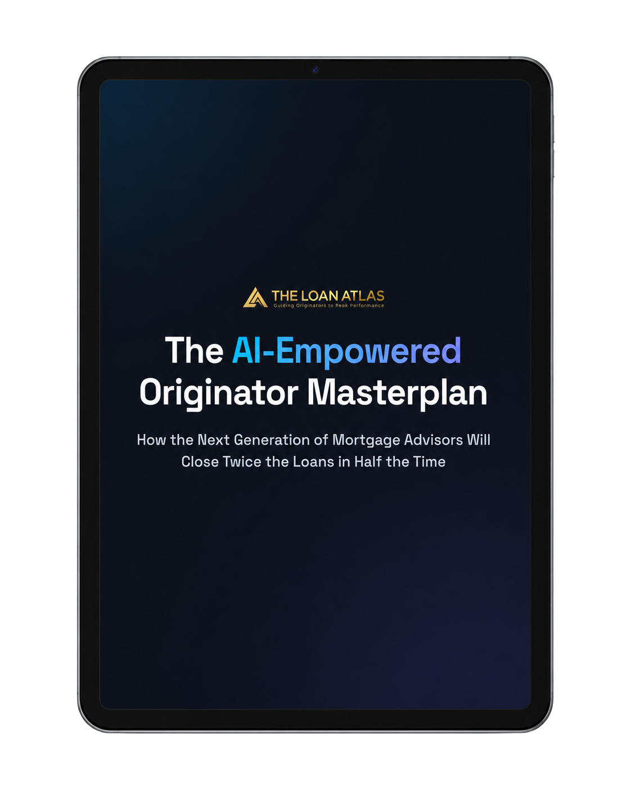

Most originators don't have a lead problem — they have a follow-up problem. The deals are already in the pipeline; they just stall between the first conversation and the application.
The AI-Empowered Originator Masterplan
See how the next generation of loan officers close twice the loans in half the time.
Get the plan
That's why the best producers treat every touchpoint as part of one system, not a string of one-off calls. Here's what that looks like in practice.